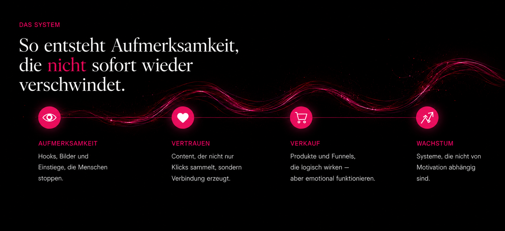

Social Media war nur der Einstieg.
Aufmerksamkeit ist
kein Zufall.
Ich baue Systeme aus Psychologie, Content und Strategie, die Menschen stoppen, verstehen und handeln lassen.
Nicht weil du zu wenig machst. Sondern weil niemand dir gezeigt hat, wie Aufmerksamkeit wirklich funktioniert.
Aufmerksamkeit ist keine Frage des Glücks. Sie ist Psychologie. Sie ist Timing. Sie ist Struktur.

Kein Template. Kein Copy-Paste. Sondern ein System, das zu dir passt.
Ich sehe deine Vision, bevor du sie kennst.
Mich interessiert nicht mehr Content. Mich interessiert, warum Menschen reagieren.
Warum sie stoppen. Warum sie teilen. Warum sie kaufen. Warum manche Marken hängen bleiben.
Keine Agentur. Keine 08/15-Strategien.
Sondern etwas, das wirklich zu dir passt.